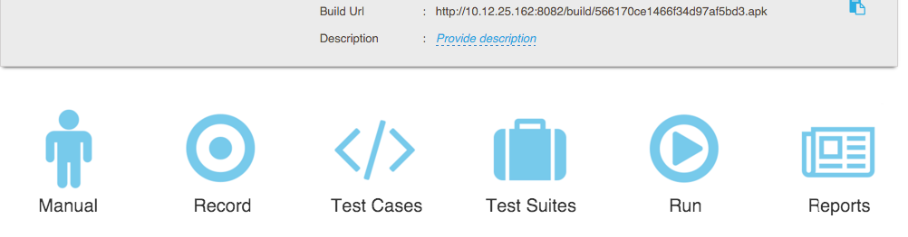

13. RobusTest Hub¶

Configuration
Using RobusTest Hub, you can run your own Appium tests on devices connected to the RobusTest device cloud. You need make changes at a few places in your test script to get going. More specifically these changes need to be made to the desired capabilities that are specified before starting an Appium Server. Following are the values that need to be provided/updated in the desired capabilities object
- app - You can set the app value to the build URL that is created for every build that is uploaded to RobusTest. In case you wish to execute your tests on a specific build, you just need to select that build from the Project Dashboard and copy the link to the build by clicking on the Selected Build URL button. The URL will look something like
You can also use the standard URL for the latest build by using the Latest Build URL available on the Project Dashboard. The URL will look something like
http://192.168.1.1:8081/build/581b074e7ec1653a30d1f438/581ae4a37ec165084ea9cdc3/latest.apk
- device - set this value to the name of the device that you wish to run on. The list of names of devices available for use can be obtained from the device dialog available when you click on Record button on the project page. You can also get the list of available devices using the device list API
http://192.168.1.1:3142/devices
The response of the above API looks like below
{“available”: [{“available”: “Yes”, “supportHub”: “Yes”, “gmsversion”: “5.0.2”, “name”: “SM-G530H”, “supportManual”: “Yes”, “supportAutomation”: “Yes”, “adb_id”: “404b6569”, “reservedForProject”: [], “os”: “android”}], “busy”: [], “totalOffline”: 0, “offline”: [], “total”: 1, “totalBusy”: 0, “totalAvailable”: 1}
From the response, one can find out details like availability of device for RobusTest Hub, device name, Android version, etc., This response can be used to filter out devices that can be used to run Appium tests on the Hub.
- Change the Appium URL to point to the RobusTest Hub. If you are running your tests on a local instance of Appium using devices connected to your system, the Appium URL will look like
Change this value to point to the RobusTest Hub.
After the change, your RobusTest Hub URL will look like
http://192.168.1.1:3142/wd/hub
Test Execution
Once you have made the above changes, run the tests as you would normally do i.e. as you a pre-configured job or from your system.